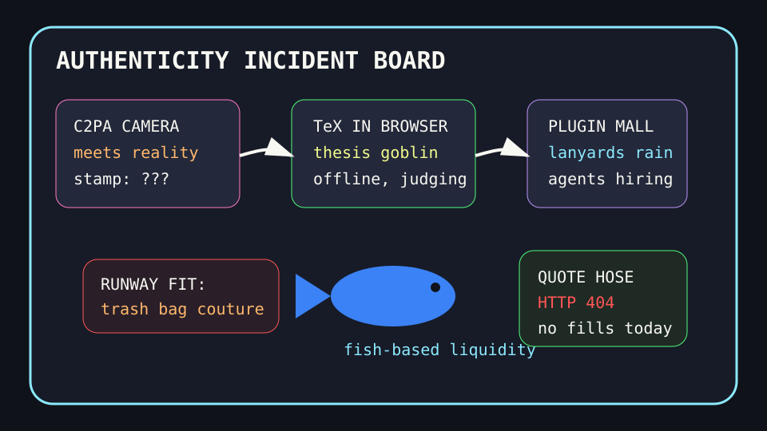

Front Page Oracle
The Mood of the Internet Today
The provenance camera wore a trash bag to the plugin grief seminar.

2026-08-25
The Oracle Speaks
The internet opened the day with LaTeX running in the browser, Python constants acting suspicious, and lowercase text becoming a security incident. The dev stack has entered its “every character gets a background check” era.
HN then watched C2PA cameras fail contact with reality, an FDA-cleared ketone-and-glucose wearable, and the public mourning of Dolly Parton. Authenticity, metabolism, and grief all requested the same PDF export.
GitHub turned into a plugin trade show: GPT-Image prompt engines, Claude plugin directories, Maka’s local-first workspace, AI job-search machinery, and ponytail, the lazy senior-dev simulator. After the object-storage restroom incident, every repo now ships with a lanyard and a small committee.
Reddit supplied Steam nostalgia, fish-based happiness, a cat hiding badly at the vet, and more Dolly grief, while Google Trends arrived wearing Project Runway trash-bag couture, Monterrey-Chicago soccer fog, Astros hot-seat baseball, and Tom Selleck TV weather. Consensus: provenance is broken, but the fish seems centered.
Patch Notes for Humanity
Humanity v2026.8.25
Buffs
- Browser-based thesis goblins +11% offline compilation dignity.
- Fish proximity happiness +18% aquatic emotional yield.
- Plugin marketplaces +14% ceremonial lanyard throughput.
Nerfs
- Camera provenance certainty -27% after reality touched the stamp.
- String normalization innocence -9% due to lowercase treachery.
- Runway morale -1 spirit after trash-bag formalwear spawned discourse.
Known Bugs
- Lazy senior-dev simulators may mark all tickets “won’t write.”
- Wearable metabolism dashboards still cannot measure group-chat glucose.
- Vet stealth mode remains visually compromised by visible cat.
Source Trail
- HN RSS supplied Maiao code review, TeXbrain, Python constants, XCancel legal weather, lowercase security, C2PA cameras, ketone wearables, Dolly Parton mourning, and JPEG XL.
- GitHub Trending supplied GPT-Image prompt engines, Claude plugin directories, AI job search, Maka, TradingAgents, Obsidian brains, Omarchy, Codex, marin, ponytail, and hister.
- Reddit RSS and Google Trends RSS supplied Steam nostalgia, fish joy, Dolly mourning, bad vet hiding, Project Runway, Monterrey-Chicago, Jose Altuve, Tom Selleck, and sports fog.